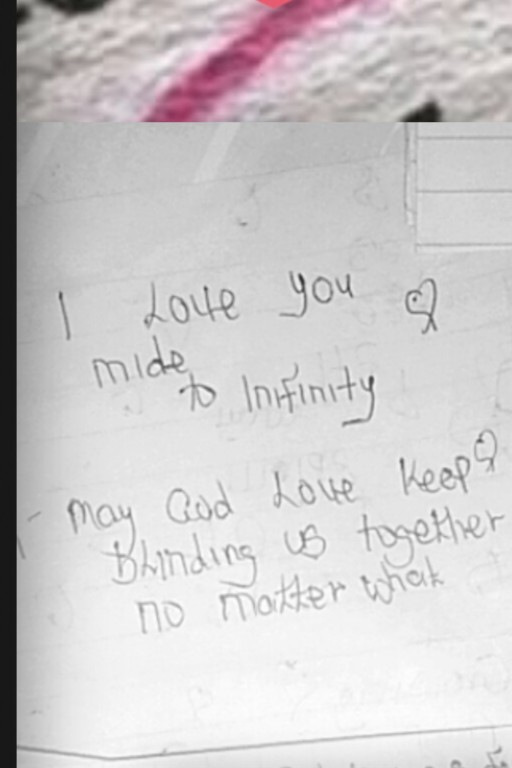
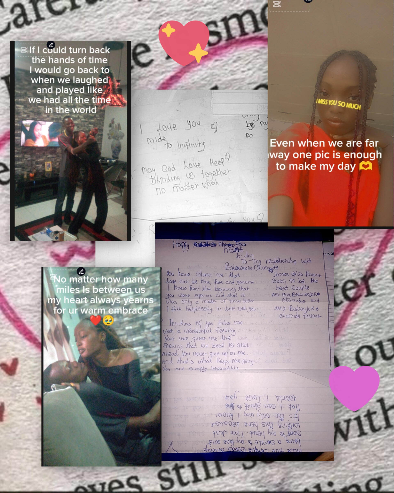

a little something for u
i know things are hard especally with this distance and it pains me that am not here to celebrate this specall day with u
Today is a very specal day for us not only cuz a wonderful person was born today but also was the start of this our beautiful relationship i can still remember how happy i was when u told me u yess the joy i felt when u would call me baby even now those memories are carved in stone in my mind
its been a wonderful journy honestly from all our fights to our disagree ments to our laught to times when we hurt each other , i want to specally thank u for not also being my baby gal for being my angel , my home ,my surport system for all the correction and thank u for being there for me even when u have ur own problems thank u for allowing me to be imperfect eve though it can be annoying i love u soo much my angel happy birthday /anniversryi remember when i saw this message inside me i was so happy

Honestly i don't know what to say like its really been a journy like how we've grown together and the memories we've made even with all the challenges that we have faced togther i really want to tell u for ur patience
the thought of u makes me smile and i hope that this day brings u as much happiness as u have brought into my life like i can't wait to see u and hold u in my arms and tell u how much i love u and how much u mean to me and i will always be here for u no matter what even from over here am alway rooting for uam sorry for the way i sometimes act that have made u sad u mean a lot to me even thought am learning how to express my feelings better and communicate instead of keepings it to myself
like i know i can be a little stubborn and sometimes i don't express my feelings the way i should but am learning and i hope u can be patient with me as we grow together here's to many more years of love and happiness together my angel i love u soo much and i hope that this day is as special as u are to me
here is a little secret do u know people saw i act like ur my first love
here's to many more years of love and happiness together my angel i love u soo much and i hope that this day is as special as u are to me
here is a little secret do u know people saw i act like ur my first love
